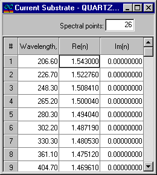

Current Substrate
The Current Substrate window provides detailed information regarding the substrate data file currently being loaded into memory, as well as any substrate parameters that have been calculated during the substrate characterization process. This window is essential for reviewing and understanding the properties of the substrate being analyzed.

Note: Data in this window cannot be edited.